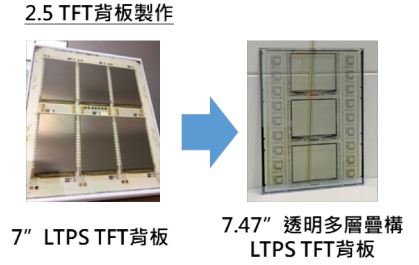

| DLT 透明 TFT 下板技術 Transparent TFT back plate technology |
| 國際關注於無光罩製程，而以無光罩數位曝光技術取代傳統 黃光製程，解決目前光罩製程時間冗長/成本高問題，開發 新感光樹脂與增感劑結構，以控制吸光波段，提高感度與線 寬均勻性，相關材料技術可應用於顯示器下板 TFT 製程、 封裝、IC 載板及 PCB 產業上，作為線路、蝕刻或電鍍光阻 材料，並加速補強產業化缺口。 The maskless process were focused in the market that can save the long and expensive photomasks for lithography process. For maskless process industrialization, the high sensitive photoresist was the key material to reduce the exposure process time and cost. By development of new high sensitive sensitizer to control the absorption band to meet the DLT light source that improve the photoresist sensitivity and line width uniformity. The material technology can be applied to the TFT process, packaging, IC carrier and PCB industries.  |
| 技術洽詢聯絡人：黃耀正 聯絡電話：03-591-8591 手機:0919-177179 E-mail：yj-huang@itri.org.tw |